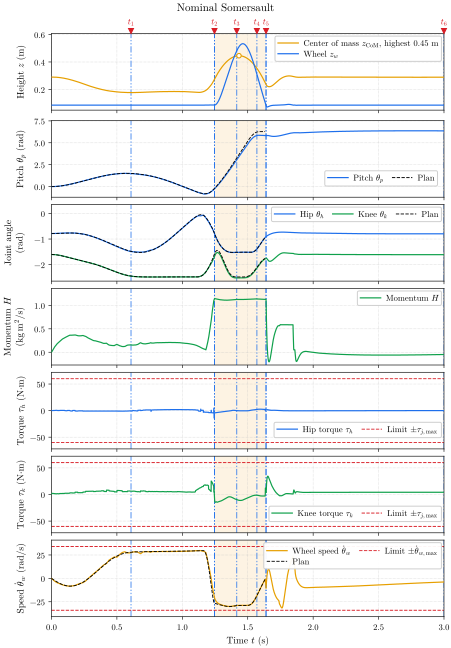
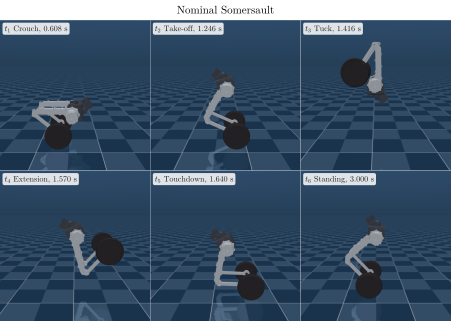
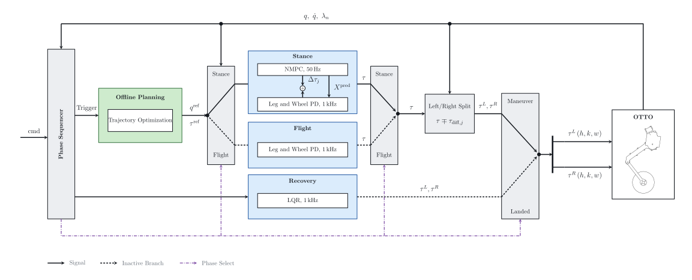

Overview
OTTO rolls on two wheels and uses its two-joint legs to change height and leave the ground. This project makes it perform a full forward somersault. It crouches, pushes off, rotates a full turn in the air, lands on its wheels and recovers.
The robot is underactuated at the wheel contact, and once it leaves the ground its angular momentum is fixed, so the landing is decided at push-off. Earlier controllers hand-design the take-off and landing or impose a full terminal state without reporting the touchdown rate it demands. This project plans the maneuver around what landing the recovery controller can accept.
Process
Model the robot
The full-order dynamics of the four leg joints and two wheels are built with Pinocchio, so the planner and the controller share one model.
Plan the whole maneuver
Stance and flight are solved as one Hermite-Simpson collocation problem in CasADi, with both phase durations left free.
Define a landing the robot can catch
Instead of fixing an exact touchdown state, the plan bounds the touchdown pitch rate and centers the landing pose on the recovery controller's own equilibrium.
Track it with NMPC
During stance, an acados NMPC re-solves the reference every cycle. Its torque correction is limited to a margin the plan reserves, so tracking never fights the actuator limits.
Stress-test in simulation
Mass error, IMU noise, lower ground and extra payload show how much the plan and the tracker can each absorb. The controllers run in MuJoCo through ros2_control.
Results
Every case runs three times. A run completes when three conditions hold.
- No body other than the wheels touches the ground.
- The body turns at least \(270^\circ\), three quarters of the commanded turn.
- The robot recovers to standing.
Nominal Somersault
The run shown lands \(25.9^\circ\) short of upright. It leaves the ground with an angular momentum \(12.9\%\) below the plan, and nothing in flight can add to it.
Table 1. Nominal somersault, completed runs
| Metric | Min | Max | Run Shown |
|---|---|---|---|
| Rotation (deg) | 347.2 | 348.9 | 348.9 |
| Touchdown Pitch Rate (rad/s) | −0.433 | +0.624 | +0.624 |
| Peak Tilt After Touchdown (deg) | 19.8 | 36.5 | 19.8 |
| Minimum Base Height (m) | 0.2162 | 0.2164 | 0.2164 |
| Flight Duration (s) | 0.376 | 0.394 | 0.394 |
The run shown lands \(25.9^\circ\) short of upright. It leaves the ground with an angular momentum \(12.9\%\) below the plan, and nothing in flight can add to it.


Real-Time Feasibility
Table 2. Stance NMPC solve time, last solve of each of ten nominal runs
| Metric | Value |
|---|---|
| Mean | 8.98 ms |
| Median | 8.84 ms |
| 95th Percentile (n=10) | 10.31 ms |
| Maximum | 10.31 ms |
| Exceeding the Control Period | 0 of 10 |
| Machine | Intel Core i7-12700 |
Every solve sits inside the \(20\,\mathrm{ms}\) control period.
Robustness to Uncertainty
Three errors are tested.
- A wrong torso mass belief in the controller.
- Noise on the orientation and rate the controller reads.
- A landing surface below the planned height.
Rotation error is the rotation minus the commanded \(360^\circ\), given as the range over the completed runs. Every condition completes the maneuver.
Table 3. Robustness to uncertainty
| Case | Rotation Error (deg) | Pitch Rate (rad/s) | Motion |
|---|---|---|---|
| Mass −40% | −17.5 to −11.0 | −0.52 to +2.75 | Successful |
| Mass −20% | −10.9 to −6.2 | −0.57 to −0.48 | Successful |
| Mass +20% | −8.5 to +5.8 | −0.78 to −0.57 | Successful |
| Mass +40% | −2.8 to +1.6 | −0.76 to −0.65 | Successful |
| IMU 33% | −13.3 to −5.8 | −0.81 to −0.74 | Successful |
| IMU 67% | −8.8 to −7.4 | −0.78 to +0.73 | Successful |
| IMU 100% | −8.1 to −1.7 | −0.65 to −0.64 | Successful |
| Ground −5 cm | −13.6 to −6.1 | −0.87 to +0.12 | Successful |
| Ground −10 cm | −46.1 to +0.1 | +1.67 to +2.13 | Successful |
Added Torso Mass
Re-solving the plan for a known torso mass change is tested at \(+20\), \(+40\) and \(+60\%\) against the baseline plan kept fixed. At \(+60\%\) the fixed plan falls and the re-solved plan completes.
Table 4. Torso mass raised, fixed plan against replanned
| Torso Mass | Fixed Plan | Replanned | ||
|---|---|---|---|---|
| Error (deg) | Motion | Error (deg) | Motion | |
| +20% | −28.2 to −3.1 | Successful | −14.7 to +2.3 | Successful |
| +40% | −14.4 to −5.4 | Successful | −7.9 to +0.4 | Successful |
| +60% | −14.2 to −14.2 (1 run) | Failed | −6.8 to −2.4 | Successful |
Figures
